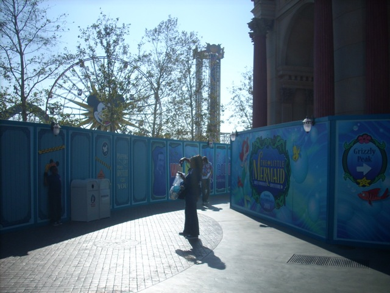
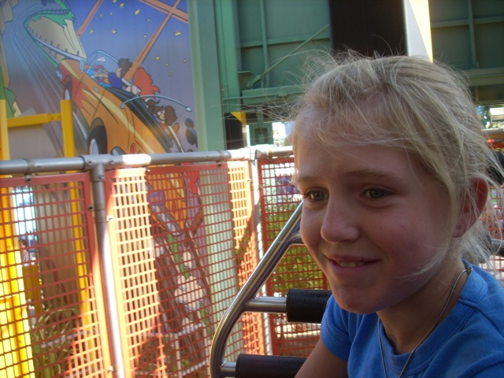
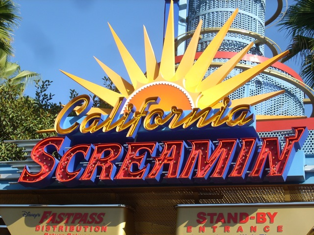
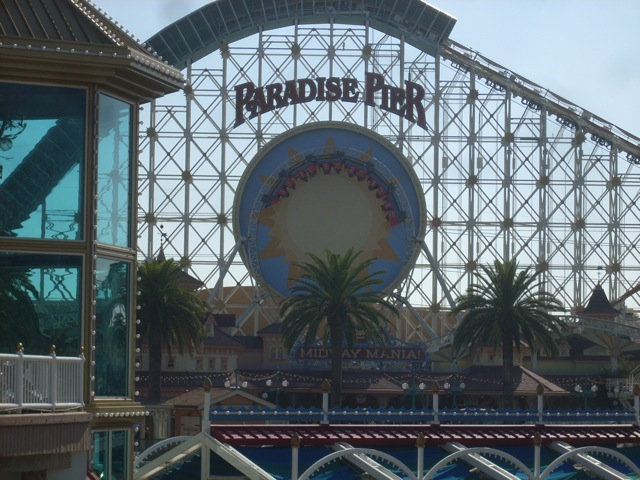
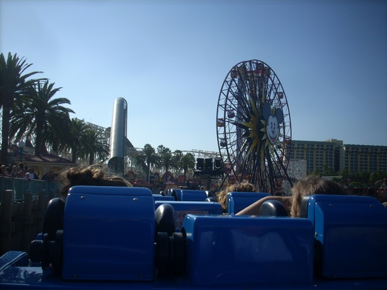
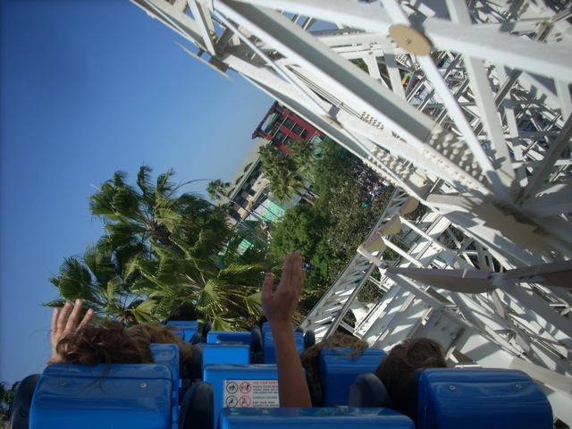
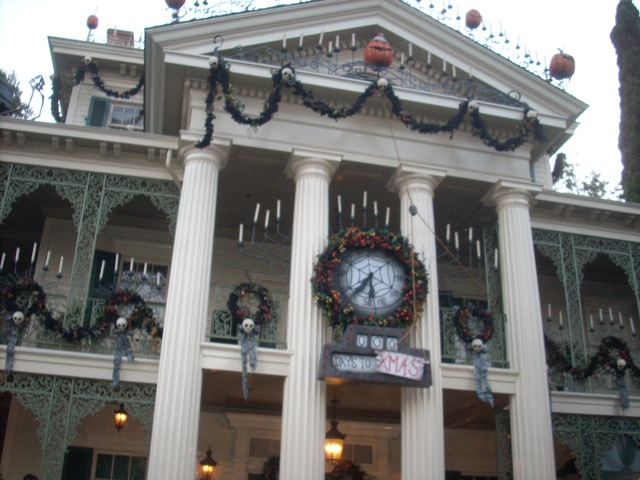

Fall 2009 Photos
Disneyland ResortKnotts Berry Farm Six Flags Magic Mountain
So in Incrediblecoasters Tradition, we had our Yearly Fall "Insert Year Here" Photos Update. And this year, it was pretty interesting. Anyway, we started out by heading on down to the Disneyland Resort. And the traffic was bad, and I mean REALLY FU*KING BAD!!!! Much worse than normal LA Traffic, and THAT is pretty bad.
Damn! I guess that new Halloween Commercial worked a little too well.
The park was so crowded that Disney was giving out these brochures on how to avoid crowds.
Anyways, we are now officially at the Disneyland Resort.

Let's see how California Adventure's Makeover is doing.
For the most part, it looks just like my last visit.
Hey Isaac, Come on down to the Disneyland Resort! The commercial forgot to mention that they just got Dirt the Ride for 2009!
 Time for the first coaster of the trip.
Time for the first coaster of the trip.

I'm scared of what Disney might do to Mullholland Madness during it's makeover.
Silly Swings Construction Update. There now seems to be the first peices of the new Chairswings in place.

All right, California Screamin Time.

I'm still getting used to the Mickey Head not being there.

We're launching on the SCREAMINGLY AWESOME California Screamin.

California Screamin is still going strong.
 All right, California Screamin Time.
All right, California Screamin Time.
 California Screaming DUEL!!!!!!!
California Screaming DUEL!!!!!!!
This is just one of the many wonders created by Genetically Modified Food.
 Florida's may be better, but California Tower of Terror still kicks ass.
Florida's may be better, but California Tower of Terror still kicks ass.
This Ice Cream Sandwich is better than sex.
In Florida, I'd still be able to see the Castle.
You know, I can't remember the last time I rode Star Tours. I wasn't sure if Disney demolished the ride behind my back.
 Ok. So California Screamin, Construction Updates, and Ice Cream Sandwiches may be cool and all, but this is the REAL REASON we at Incrediblecoasters came to the Disneyland Resort.
Ok. So California Screamin, Construction Updates, and Ice Cream Sandwiches may be cool and all, but this is the REAL REASON we at Incrediblecoasters came to the Disneyland Resort.
 Unlike Rockin Space Mtn, Space Mtn Ghost Galaxy is actually awesome and something worth doing again next Halloween.
Unlike Rockin Space Mtn, Space Mtn Ghost Galaxy is actually awesome and something worth doing again next Halloween.
Celeste, what the hell are you closing your eyes for? The Fire Monster isn't THAT scary.

Continuing the tradition of going on Halloween themed rides, up next was the Haunted Mansion.
Grr!!! I'm Mr. Pumpkin Dude!!! You made a pie out of my mother and now I want revenge! Gimme your soul!!!
Well I didn't want any trouble from Mr. Pumpkin Dude, so after Haunted Mansion, I went straight to Indiana Jones.
 Ahh! A snake!!!!! Snakes are scary.
Ahh! A snake!!!!! Snakes are scary.
For dinner, we went to this Mexican Place by Thunder Mtn. It was ok, I guess. I've had MUCH better Mexican Food though.
And here, you can see all the people that lined up to see the Fireworks, which were awesome by the way.
Knotts Berry Farm
Home